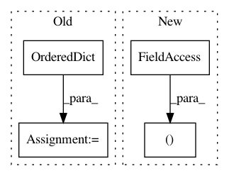

499ec5acc1d3672b7ed08297e232211f0ad8d390,ludwig/models/model.py,Model,train,#Model#Any#Any#Any#Any#Any#Any#Any#Any#Any#Any#Any#Any#Any#Any#Any#Any#Any#Any#Any#Any#Any#Any#Any#Any#Any#Any#Any#Any#,232
Before Change
// progress_tracker.vali_metrics,
// progress_tracker.test_metrics
// )
fake_metrics = OrderedDict([("y", OrderedDict([("loss", [9489.847173455057]),
("mean_squared_error", [9489.847173455057]),
("mean_absolute_error", [76.44962405086903]),
("r2", [0.00020098610875311863]),
("error", [-0.8305106002293275])])),
("combined", {"loss": [9489.847173455057], "accuracy": [0.0]})])
return (fake_metrics, fake_metrics, fake_metrics) // todo: tf2 debugging only
def train_online(
self,
After Change
// progress_tracker.test_metrics
// )
return (
progress_tracker.train_metrics,
progress_tracker.vali_metrics,
progress_tracker.test_metrics
)
def train_online(
self,
dataset,
In pattern: SUPERPATTERN
Frequency: 3
Non-data size: 4
Instances
Project Name: uber/ludwig
Commit Name: 499ec5acc1d3672b7ed08297e232211f0ad8d390
Time: 2020-03-19
Author: w4nderlust@gmail.com
File Name: ludwig/models/model.py
Class Name: Model
Method Name: train
Project Name: ClimbsRocks/auto_ml
Commit Name: e87334a5fbe16bd1f16357b452036b578ca3b5f8
Time: 2017-04-17
Author: ClimbsBytes@gmail.com
File Name: tests/automated_tests.py
Class Name:
Method Name:
Project Name: streamlit/streamlit
Commit Name: 21b764b3ddbc08b9de539f9d8f6de48a947ba344
Time: 2019-09-29
Author: monchier@users.noreply.github.com
File Name: lib/streamlit/hello.py
Class Name:
Method Name: